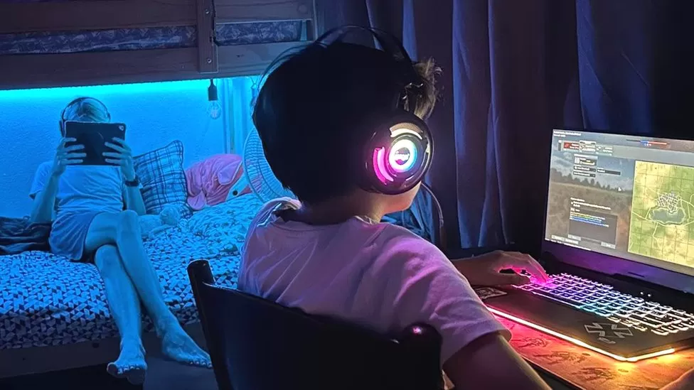

How computer games encourage kids to spend cash

By Katherine Latham
Business reporter
Nara Ward says keeping track of her kids' spending when they are playing
their favourite computer games is a full-time
job.
Ms Ward lives in Barbados with her husband and sons, Finn, 14, and Leif, 12.
When Leif started playing Roblox, he began asking for robux - the game's
currency - that allows players to upgrade their
character or buy virtual items.
So his grandparents gave him $200 (£159) Apple credit for Christmas.
"To my shock, he spent all of it in a matter of days," says Ms Ward. "After that, I
gave him no more than $10 worth of
robux per month. He quickly became
frustrated and bored with the game."
Leif moved on to World of Tanks, which also requires players to upgrade their
weaponry using PlayStation credit.
"However, this game has the option to watch ads to gain credit," says Ms Ward.
"He would do that out of desperation when
he had used up his monthly
gaming allowance."
Ms Ward says her younger son has yet to learn self-control or money-sense.
"It's something that I have to police constantly."
Rather than profiting from the initial sale of a video game, many of today's
gaming companies rely on revenue generated
by in-game purchases, or
microtransactions.
AAlternatively, in-game purchases can provide a tactical advantage to the
gameplay - extra lives, character upgrades or
weapons - providing a lead over
players who did not purchase the additional content.
The global online microtransaction market is forecast to grow from $67.94bn
in 2022 to $76.66bn in 2023.
However, there are signs of a backlash from experts and consumers alike. Also,
some companies are promising new releases
that are in-game purchase-free.
Sarah Loya's son Andrew, 14, spends almost all his pocket money on gaming
but, she says, that isn't a problem and gaming
makes him happy.
"He plays daily, after school and on the weekends. I don't really see much of a
negative. He's a smart kid and knows the
difference between reality and
fantasy."
Ms Loya lives in Texas with Andrew, and his brother Rex, 6.
"My bank account is linked to Andrew's subscription, so I would see if he
purchased something without permission," says
the 43-year-old, "but he
always asks me before making a purchase."
More technology of business:
- Teaching robots to blink is hard but important
- Why there is serious money in kitchen fumes
- The tech entrepreneur betting he can get younger
Back in Barbados, Ms Ward has set up screen time limits and passcodes to
keep Leif gaming safely.
"My password is needed to make any purchases and if he wants money added
to his account he has to ask me.
Microtransactions are annoying but this is a
life lesson."
- If parents are worried about a young person struggling with gaming or
potential gambling-related harms, please visit the Parent Hub website by
YGAM (Young Gamers and Gamblers Education Trust) for support and
resource.